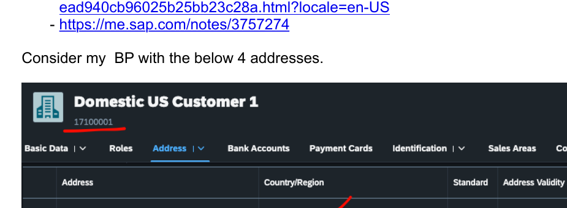
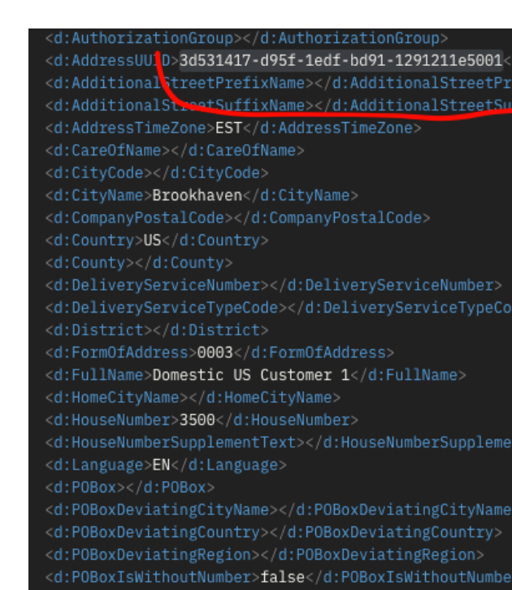
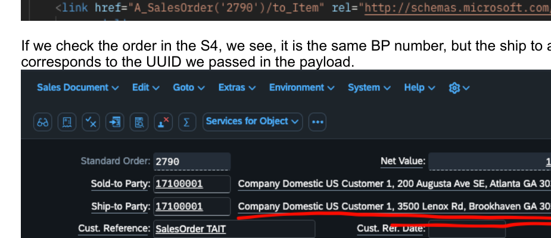

Use a different Ship-To address.
Create a sales order for a business partner that has multiple master-data addresses, and deliberately select which address should be used for the Ship-To partner.
Business partner with multiple addresses
A customer can have several maintained addresses. The requirement here is not to create a different Ship-To business partner, but to use a specific address belonging to the same business partner when the sales order is created.
Identify the address
Read the business partner's addresses and locate the address you want to use.
Capture its UUID
For the OData V2 pattern, obtain the address UUID from the Business Partner API.
Create the order
Pass the selected address on the Ship-To partner when posting the sales order.

Query Business Partner addresses
The source example queries the Business Partner OData V2 service and reads the address UUID for the required address. SAP's Sales Order V2 documentation explicitly points to the Business Partner API as the way to retrieve this UUID.
Example request pattern
GET /sap/opu/odata/sap/API_BUSINESS_PARTNER/
A_BusinessPartner('<BP_ID>')/to_BusinessPartnerAddress
Pass BusinessPartnerAddressUUID on the Ship-To partner
For the Sales Order (A2X, OData V2) API, SAP documents BusinessPartnerAddressUUID specifically for creating orders for business partners with multiple addresses.
{
"SalesOrderType": "OR",
"SalesOrganization": "1710",
"DistributionChannel": "10",
"OrganizationDivision": "00",
"SoldToParty": "<BP_ID>",
"PurchaseOrderByCustomer": "MULTI-ADDRESS-DEMO",
"to_Partner": [
{
"PartnerFunction": "SH",
"Customer": "<BP_ID>",
"BusinessPartnerAddressUUID": "<ADDRESS_UUID>"
}
],
"to_Item": [
{
"Material": "<MATERIAL>",
"RequestedQuantity": "1",
"RequestedQuantityUnit": "PC"
}
]
}
Do not reuse the V2 payload unchanged
The source material reports that adding BusinessPartnerAddressUUID to the OData V4 request failed. Current SAP Help shows a different V4 pattern: partner address data can be supplied as document-specific address fields during the deep insert.
Select a master-data address by UUID
Use BusinessPartnerAddressUUID in to_Partner. SAP's dedicated V2 multiple-address example documents this mechanism.
Use the V4 partner-address structure
SAP's V4 create-request documentation demonstrates creation with partner address fields. Treat V2 and V4 as different request models rather than assuming the same property is accepted in both.
Check capability differences before standardising
SAP maintains a feature-comparison page for the Sales Order A2X OData V2, A2X OData V4, and A2A APIs. The APIs overlap substantially, but they are not feature-identical.
- Choose an API based on the complete business scenario, not only the address requirement.
- Check the SAP Help feature comparison for capabilities that matter to your implementation.
- For example, SAP's current comparison lists variant configuration for OData V4 but not OData V2.
- Keep API-version-specific payload examples separate in implementation documentation and test collections.
SAP Help
Use the current SAP documentation as the source of truth for field availability and request structures in your target release.